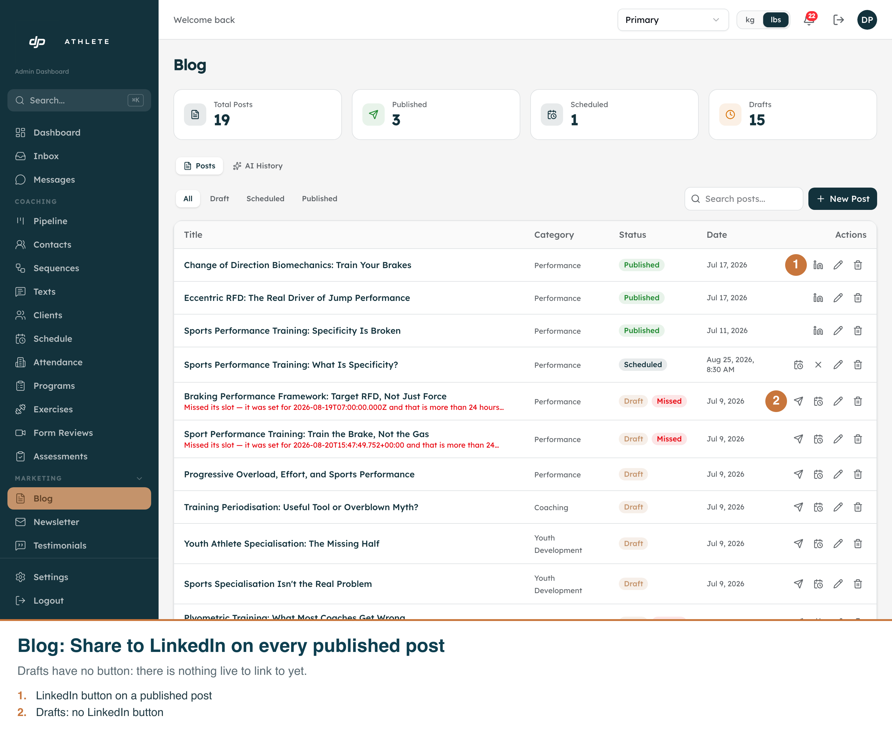
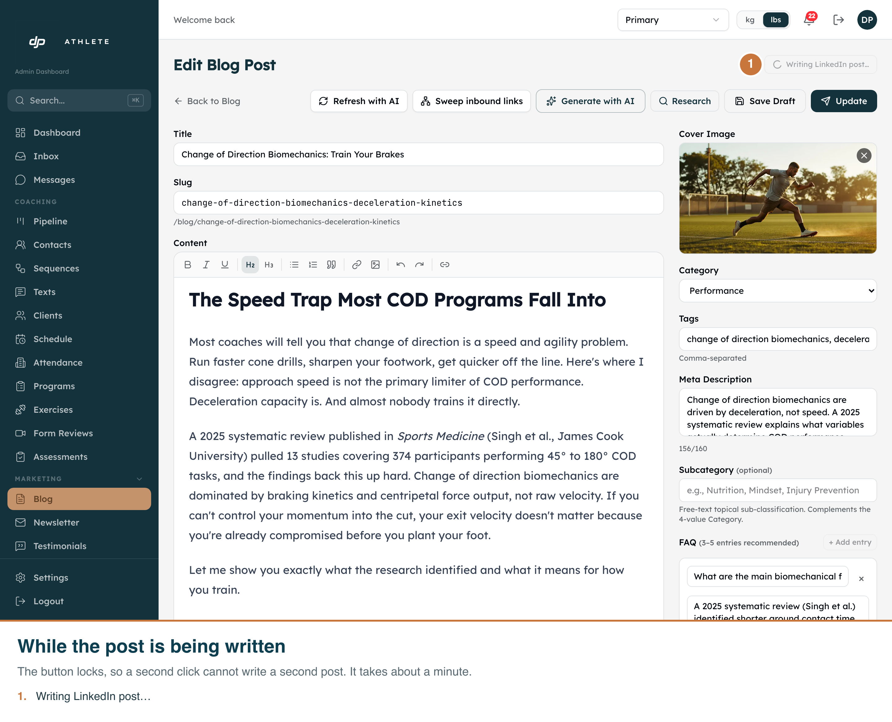
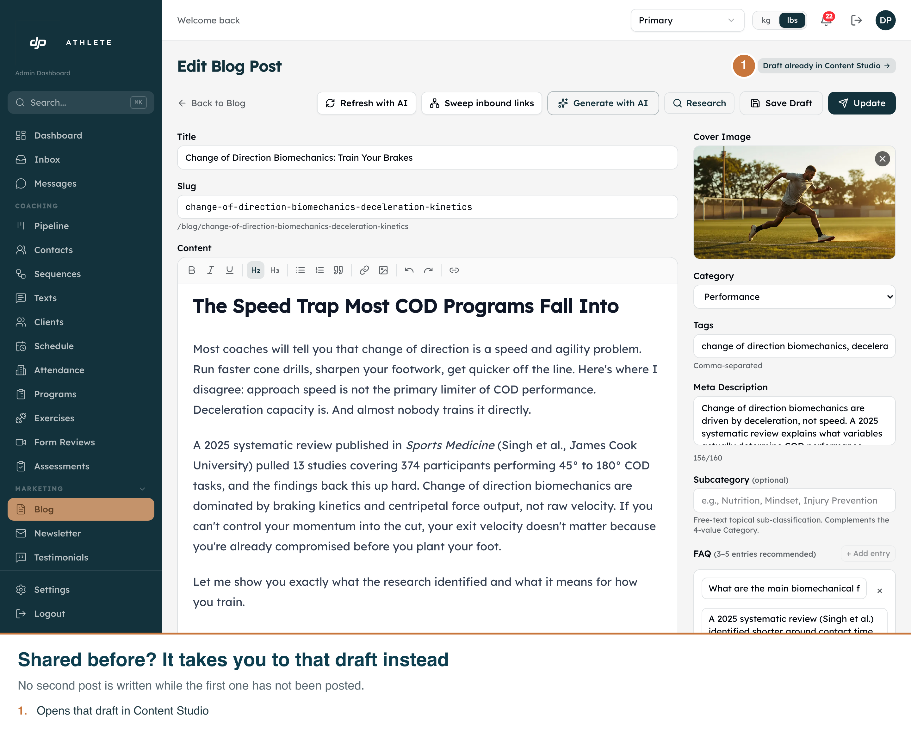
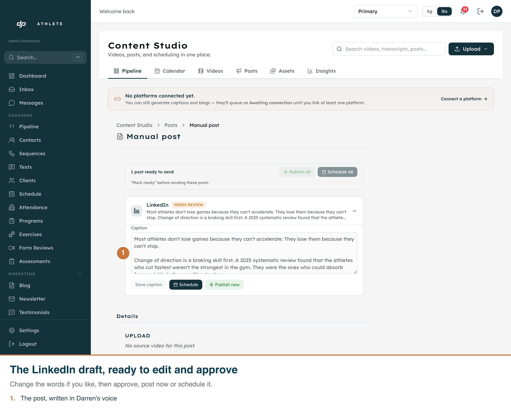
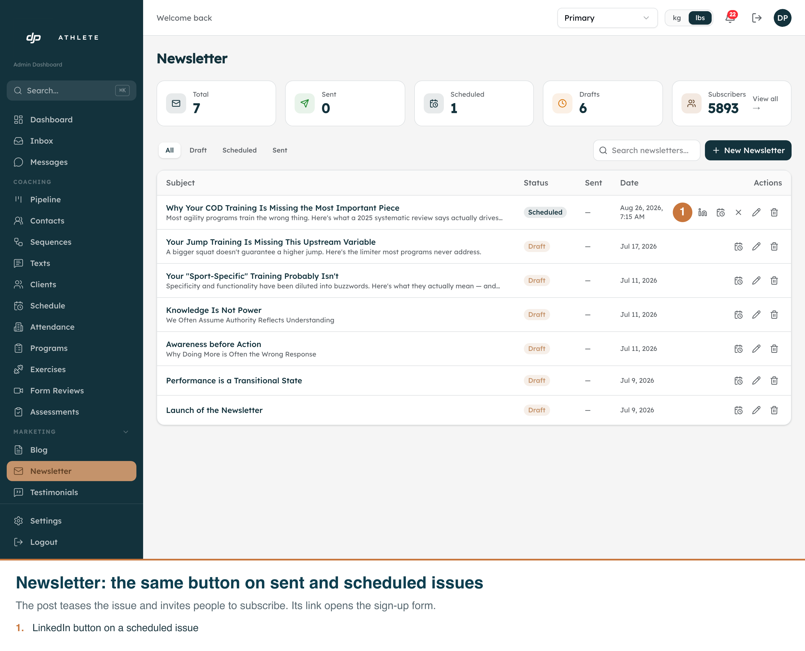
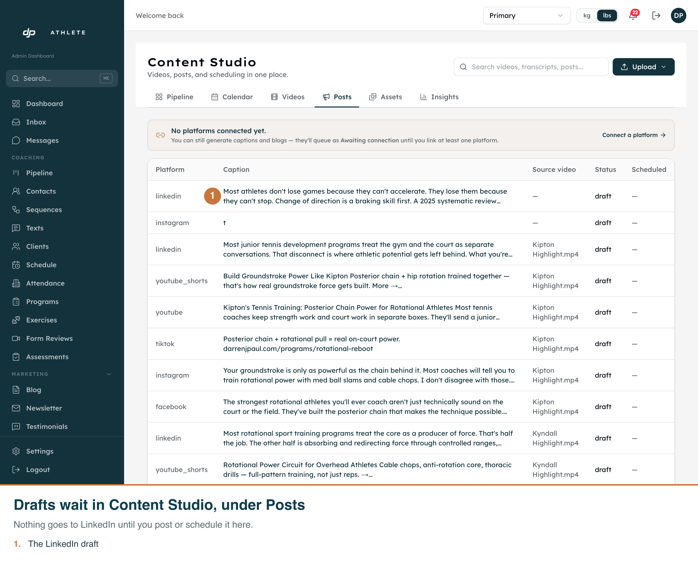
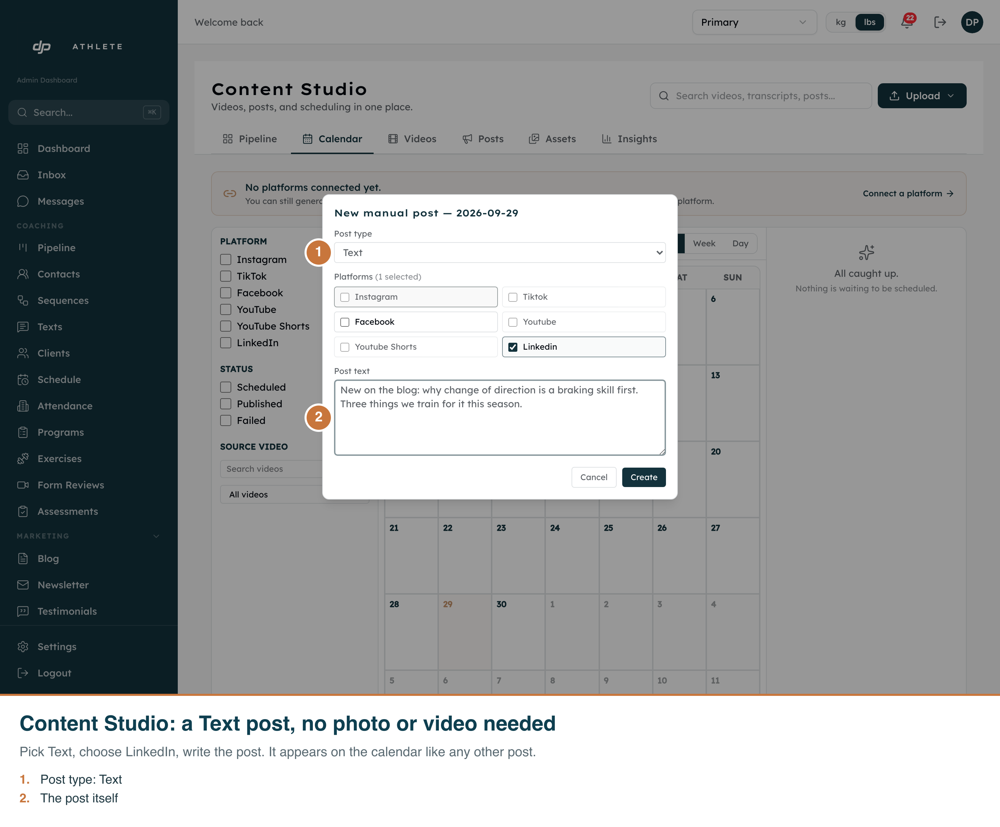

Share to LinkedIn
The real admin on the test database, 2026-09-30. Each picture has its numbered notes burned in.
How these were taken. Shot 3 is the server's real answer (LinkedIn is not connected on the test database).
For shots 4 and 5 the share request was answered by the capture script, because a real request starts the
writing job on the live system, which works on production data. "Draft ready" is not shown for the same
reason; shot 5b shows the draft that link opens. The draft in 5b and 7 was added to the test database by hand.






